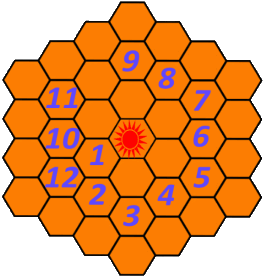

Постройки
Сканер голубых звёзд

Ищет ближайшие голубые звезды (в таблицах синие звезды (СЗ)). Сканер отправит линкор к обнаруженной голубой звезде. Системы голубых звезд крайне недолговечны; поскольку звезды постоянно коллапсируют, находиться рядом с ними небезопасно. Все прибывшие линкоры игроков будут вести огонь друг по другу и по силам «Цербера» в системе. Побеждает хозяин последнего уцелевшего линкора. Можно переместить в другое место за 1000 водорода для каждого сектора. Минимальный уровень планеты для постройки сканера - 9. Стоимость - 20000, время постройки 3 сек. В системе голубых звезд игроки сражаются с другими игроками или с ботами (зависит от активности в это время игроков).
Подробнее информацию о СЗ можно прочитать в разделе Звёзды.
Станция переправки грузов

Позволяет производить доставку грузов с планет или торговых станций из указанных секторов по номинальной стоимости в течении непродолжительного периода времени. Если в указанном секторе имеется несколько планет или планета со спутниками, то сначала производится доставка первой колонизированной планеты, затем спутника (ов) этой планеты. После этого производится доставка грузов со второй планеты. Улучшите службу переправки, чтобы увеличить количество контролируемых секторов и объемы поставок. Для активации переправки требуются фрагменты звезд и водород. Фрагменты можно получить за выполнение заданий в системах голубых звезд (СЗ). Станцию можно переместить в другое место за 1000 водорода для каждого сектора. Минимальный уровень планеты для постройки станции - 10. Одна постройка для солнечной системы.
| Уровень | Стоимость | Время постройки | Грузов в час | Длительность действия, ч | Итого грузов будет доставлено | Цена включения (фрагментов) | Цена включения (водород) | Максимально фрагментов, вместимость | Максимально секторов, обслуж. |
|---|---|---|---|---|---|---|---|---|---|
| 1 | 10 000 | 4h | 4 | 4 | 16 | 5 | 50 | 5 | 1 |
| 2 | 25 000 | 1d | 5 | 5 | 20 | 4 | 100 | 10 | 2 |
| 3 | 50 000 | 2d | 7 | 6 | 42 | 4 | 250 | 15 | 3 |
| 4 | 100 000 | 3d | 9 | 8 | 56 | 4 | 500 | 20 | 4 |
| 5 | 200 000 | 4d | 12 | 10 | 120 | 4 | 750 | 25 | 5 |
| 6 | 400 000 | 5d | 16 | 12 | 192 | 4 | 1 000 | 30 | 6 |
| 7 | 600 000 | 6d | 22 | 16 | 352 | 4 | 2 000 | 35 | 8 |
| 8 | 1 000 000 | 7d | 30 | 17 | 510 | 3 | 3 000 | 40 | 11 |
| 9 | 4 000 000 | 8d | 42 | 20 | 840 | 3 | 4 000 | 45 | 14 |
| 10 | 8 000 000 | 9d | 60 | 24 | 1 440 | 3 | 5 000 | 50 | 18 |
Временной модулятор
Высокотехнологичная станция, способная поглощать энергию желтой звезды и манипулировать временем. Используйте ее, чтобы ускорить течение времени вблизи своей желтой звезды. Улучшите ее, чтобы увеличить фактор ускорения. Максимальный возможный уровень -16. Минимальный уровень планеты для постройки модулятора - 6. Размещается только в секторе, где расположена звезда. Модулятор можно переместить на другое место в секторе за 1000 водорода.
| Уровень | Фактор ускорения | Стоимость улучшения | Время улучшения | Максимальная длительность, мин | Перезарядка, ч |
|---|---|---|---|---|---|
| 1 | 1,50 | 1 000 | 2h | 10 | 12 |
| 2 | 1,75 | 4 000 | 1d | ||
| 3 | 2,00 | 10 000 | 2d | ||
| 4 | 2,25 | 30 000 | 3d | ||
| 5 | 2,50 | 100 000 | 4d | ||
| 6 | 2,75 | 200 000 | 5d | ||
| 7 | 3,00 | 400 000 | 6d | ||
| 8 | 3,25 | 600 000 | 7d | ||
| 9 | 3,50 | 800 000 | 8d | ||
| 10 | 3,75 | 1 000 000 | 9d | ||
| 11 | 4,00 | 2 000 000 | 9d | ||
| 12 | 4,25 | 3 000 000 | 9d | ||
| 13 | 4,50 | 4 000 000 | 10d | ||
| 14 | 5,00 | 5 000 000 | 10d | ||
| 15 | 5,50 | 6 000 000 | 10d | ||
| 16 | 6,00 | 7 000 000 | 10d |
Верфь

Верфь - это место, где производится строительство и усовершенствование кораблей. Уровень верфи игрока определяет общее максимальное количество единиц вашего флота. Максимально можно построить 15 кораблей. Верфь можно переместить в другое место за 1000 водорода для каждого сектора.
| Уровень | Флот | Стоимость улучшения | Время улучшения |
|---|---|---|---|
| 1 | 4 | 1 000 | Instant |
| 2 | 5 | 2 500 | 20s |
| 3 | 7 | 5 000 | 30m |
| 4 | 8 | 20 000 | 1h |
| 5 | 10 | 80 000 | 8h |
| 6 | 12 | 200 000 | 1d |
| 7 | 13 | 500 000 | 2d |
| 8 | 14 | 1 000 000 | 3d |
| 9 | 15 | 2 000 000 | 4d |
| 10 | 16 | 5 000 000 | 5d |
Научная станция

Научная станция исследует артефакты. Вмещает максимально 4 артефакта, а одновременно исследуется только 1 артефакт. Можно утилизировать сразу все артефакты, загруженные на припаркованных транспортах (когда ячейки в науке заполнены). Может быть перемещен на 200+ водорода для каждого сектора. Научная станция это единственное строение, способное взаимодействовать с артефактами (исследовать). Поскольку для научной станции требуются артефакты, приобретенные с помощью сканера Красных Звезд, рекомендуется размещать эту станцию близко к сканеру Красных Звёзд, чтобы снизить затраты водорода при перемещении.
| Уровень артефакта | Время изучения |
|---|---|
| 1 | 2 |
| 2 | 2 |
| 3 | 2,5 |
| 4 | 3 |
| 5 | 3 |
| 6 | 3 |
| 7 | 3 |
| 8 | 3 |
| 9 | 3 |
| 10 | 3 |
Сканер секторов
Сканеры короткого диапазона способны открывать смежные новые сектора. После открытия этих секторов становится фактически бесполезен. Сканеры имеют радиус построения в два сектора от планеты, с которой вы его строите. Перемещение допустимо только в секторе создания за 500 водорода. Тщательно планируйте их размещение.
| Уровень | Стоимость | Стоимость сканирования | Время сканирования | Время строительства |
|---|---|---|---|---|
| 1 | 2 500 | 2 500 | 4h | |
| 2 | 10 000 | 10 000 | 8h | 4h |
| 3 | 20 000 | 20 000 | 16h | 12h |
| 4 | 40 000 | 40 000 | 1d | 24h |
| 5 | 80 000 | 80 000 | 1,5d | 1d |
| 6 | 150 000 | 150 000 | 3 | 1d |
| 7 | 300 000 | 300 000 | 3,5d | 1d |
| 8 | 600 000 | 600 000 | 4d | 1d |
| 9 | 1 000 000 | 1 000 000 | 5d | 1d |
| 10 | 2 000 000 | 2 000 000 | 6d | 1d |
| 11 | 3 000 000 | 3 000 000 | 7d | 1d |
| 12+ | 4 000 000 | 4 000 000 | 7d | 1d |
Вариант расстановки сканеров по кругу, чтобы открыть все сектора наименьшим их количеством:
Сканер красных звёзд

Сканер Красных Звезд (КЗ) может обнаружить близлежащие звезды за определенное время (до 2 мин). КЗ содержат умирающие планеты с артефактами, а также охраняются силами Cererus. Другие игроки могут использовать свои Сканеры КЗ, чтобы получить доступ к тем же КЗ. Перенос сканера в другое место обойдется за 1000 водорода для каждого сектора. Вступив в корпорацию будет доступна КЗ частная (только для вас и членов Вашей корпорации) или общая на выбор.
| Уровень | Стоимость | Время строительства |
|---|---|---|
| 1 | 1 000 | 3s |
| 2 | 2 000 | 30min |
| 3 | 20 000 | 4h |
| 4 | 60 000 | 1d |
| 5 | 120 000 | 2d |
| 6 | 250 000 | 3d |
| 7 | 1 000 000 | 4d |
| 8 | 2 000 000 | 5d |
| 9 | 4 000 000 | 6d |
| 10 | 8 000 000 | 7d |
Информацию по получению влияния и требований к прохождению Красных Звезд см. раздел Звёзды.
Станция дипломатии

Станция дипломатии может создать двухсторонние прыжковые ворота между двумя игроками. После подключения оба игрока могут отправлять корабли друг другу. Может быть перемещено в другое место за 2000 водорода для каждого сектора. Требование для постройки - минимальный уровень планеты - 7. После постройки доступен поиск с кем можно установить эти отношения.
| Номер | Стоимость | Время строительства |
|---|---|---|
| 1 | 25 000 | 8h |
| 2 | 500 000 | 5d |
| 3 | 4 000 000 | 10d |
Варп-узел

Варп-узел создаются парно, активация длится 24 часа.Стоимость активации зависит от длины участка между двумя хабами из расчета 1AU=0.9 ед. водорода. После включения линии между двух выбранных варп-узлов корабли могут перемещаться между ними мгновенно и без потребления водорода. Является входом и выходом между секторами для погрузочного дрона. Требование для постройки - минимальный уровень планеты - 12. Каждый узел может быть перемещен за 4000 водорода для каждого сектора. Стоимость строительства указана за оба варп-узла.
| Пара | Стоимость | Время строительства |
|---|---|---|
| 1 | 50 000 | 12h |
| 2 | 100 000 | 1d |
| 3 | 200 000 | 2d |
| 4 | 400 000 | 3d |
| 5 | 800 000 | 4d |
| 6 | 1 500 000 | 5d |
| 7 | 3 000 000 | 6d |
| 8 | 5 000 000 | 7d |
| 9 | 6 000 000 | 8d |
| 10 | 7 000 000 | 9d |
| 11 | 8 000 000 | 10d |
| 12 | 8 000 000 | 10d |
Торговая станция

Торговые станции производят грузы как планета, но они не поднимают ваш лимит на хранения кредитов и водорода. Требование - минимальный уровень планеты 13. Максимальное хранение 18 грузов, производительность 1,5 груза в час. Перемещение в другое место обойдется 3000 водорода за каждый сектор.
| Уровень | Стоимость улучшения | Время улучшения | Доходность |
|---|---|---|---|
| 1 | 60 000 | 1d | 208/h |
| 2 | 120 000 | 2d | 291/h |
| 3 | 250 000 | 4d | 408/h |
| 4 | 500 000 | 5d | 571/h |
| 5 | 1 000 000 | 6d | 800/h |
| 6 | 2 000 000 | 7d | 1120/h |
| 7 | 3 000 000 | 8d | 1568/h |
| 8 | 4 000 000 | 9d | 2196/h |
| 9 | 6 000 000 | 10d | 3074/h |
| 10 | 8 000 000 | 11d | 4304/h |
Сканер белых звёзд

Белые звезды (БЗ) являются звездной системой , где происходит борьба корпорации против корпорации. БЗ -это масштабные усилия, которые основаны на стратегии и командной работы членов корпорации. Каждый участник может внести свой вклад в борьбу за реликвии, предоставив до двух кораблей для действий в БЗ, один из которых боевой, а другой или транспортный, или добывающий. Время действий в БЗ значительно замедлены. Маршруты, которые обычно занимают 30 секунд, могут занять до 5 часов. Замедление времени позволяет корпорациям планировать и адаптировать свою стратегию к изменяющемуся полю боя.